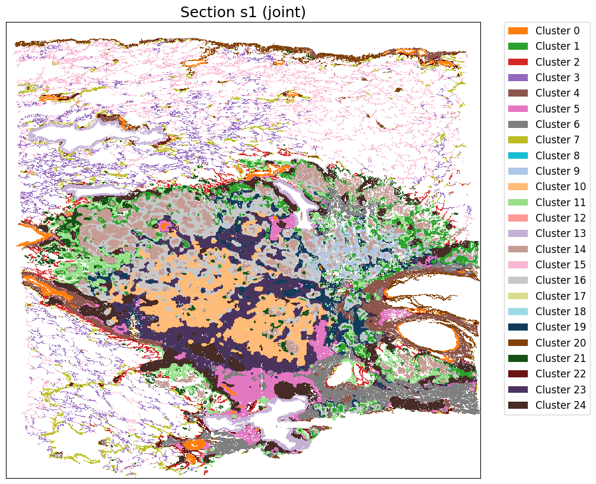
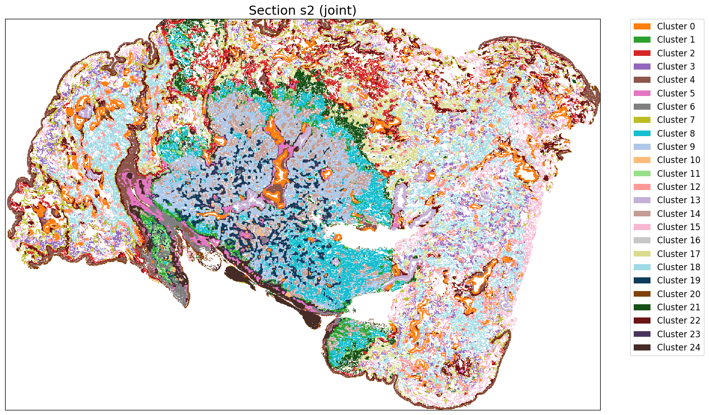
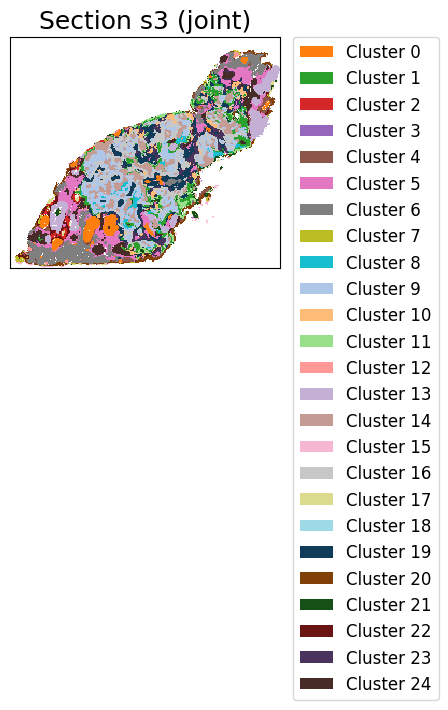
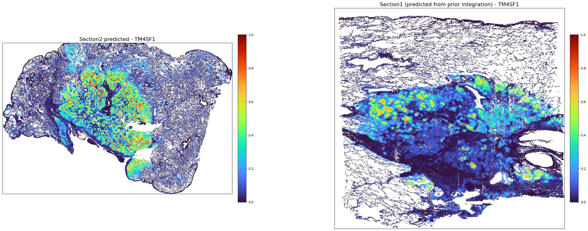
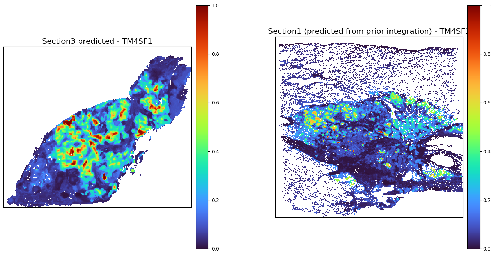

Tutorial 9 - LUAD TCGA integration¶
[1]:
import os
import torch
import scanpy as sc
import importlib
import numpy as np
[2]:
from COSIE.data_preprocessing import load_data
from COSIE.utils import setup_seed
from COSIE.configure import get_default_config
from COSIE.COSIE_framework import COSIE_model
from COSIE.downstream_analysis import *
config = get_default_config()
setup_seed(config['training']['seed'])
Load data¶
Here the gene expression for Section 4 itself was predicted from prior 4-section integration.
[3]:
file_path = '../../../project/SpatialMultimodal/all_data/Lung_cancer'
[4]:
adata1_rna = sc.read_h5ad(os.path.join(file_path, './COSIE_result_4sections/adata4_gene_imputed.h5ad'))
adata1_rna
[4]:
AnnData object with n_obs × n_vars = 836958 × 2352
obsm: 'spatial'
[5]:
adata1_rna.var_names_make_unique()
Load image feature
[6]:
adata1_rna_ori = sc.read_h5ad(os.path.join(file_path, './P11_LUAD_Visium/adata_P11_LUAD_Visium_rna_istar.h5ad'))
adata1_he = sc.AnnData(X=adata1_rna_ori.obsm['UNI_feature'])
adata1_he.obsm['spatial'] = adata1_rna_ori.obsm['spatial'].copy()
del adata1_rna_ori
adata1_he
[6]:
AnnData object with n_obs × n_vars = 836958 × 2048
obsm: 'spatial'
[7]:
adata2_he = sc.read_h5ad(os.path.join(file_path, './TCGA_HE/high_signature/sample2/adata_he_sample2.h5ad'))
adata2_he
[7]:
AnnData object with n_obs × n_vars = 1118294 × 2048
obsm: 'pxl_loc', 'spatial'
[8]:
adata3_he = sc.read_h5ad(os.path.join(file_path, './TCGA_HE/low_signature/sample2/adata_he_sample2.h5ad'))
adata3_he
[8]:
AnnData object with n_obs × n_vars = 89797 × 2048
obsm: 'pxl_loc', 'spatial'
Define the dictionary structure for input data¶
[9]:
data_dict = {
'HE': [adata1_he, adata2_he, adata3_he],
'RNA': [adata1_rna, None, None],
}
[13]:
feature_dict, spatial_loc_dict, data_dict_processed = load_data(data_dict, n_comps=50, metacell = True)
Combine adjacent 4 cells into metacell to save memory and speed up computation
-------- Processing shared modality HE across sections --------
Running Harmony for HE
2025-07-06 18:51:49,283 - harmonypy - INFO - Computing initial centroids with sklearn.KMeans...
File "/home/weili97/miniconda3/envs/py39/lib/python3.9/site-packages/joblib/externals/loky/backend/context.py", line 250, in _count_physical_cores
cpu_info = subprocess.run(
File "/home/weili97/miniconda3/envs/py39/lib/python3.9/subprocess.py", line 505, in run
with Popen(*popenargs, **kwargs) as process:
File "/home/weili97/miniconda3/envs/py39/lib/python3.9/subprocess.py", line 951, in __init__
self._execute_child(args, executable, preexec_fn, close_fds,
File "/home/weili97/miniconda3/envs/py39/lib/python3.9/subprocess.py", line 1770, in _execute_child
self.pid = _posixsubprocess.fork_exec(
2025-07-06 18:52:18,335 - harmonypy - INFO - sklearn.KMeans initialization complete.
2025-07-06 18:52:23,526 - harmonypy - INFO - Iteration 1 of 10
2025-07-06 18:56:10,871 - harmonypy - INFO - Iteration 2 of 10
2025-07-06 19:00:20,714 - harmonypy - INFO - Converged after 2 iterations
-------- Processing unique modality RNA for section 1 --------
Extracting spatial location for section 1
Extracting spatial location for section 2
Extracting spatial location for section 3
[ ]:
Specify the linkage indicator¶
[16]:
Linkage_indicator = {
('s1', 's2'): [('HE', 'HE')],
('s1', 's3'): [('HE', 'HE')],
('s2', 's3'): [('HE', 'HE')],
}
[ ]:
Define COSIE Model and Perform Integration¶
[17]:
model = COSIE_model(config, feature_dict)
optimizer = torch.optim.Adam(model.parameters(), lr=config['training']['lr'])
device = torch.device('cuda:0' if torch.cuda.is_available() else 'cpu')
print(f'Using device: {device}')
All modalities: ['HE', 'RNA']
-------- Encoder description --------
Encoder [HE]: Input 50 → Hidden [256, 128]
Encoder [RNA]: Input 50 → Hidden [256, 128]
-------- Dual prediction module description --------
Predictor [HE → RNA]: [128, 512, 512, 128]
Predictor [RNA → HE]: [128, 512, 512, 128]
Using device: cuda:0
[18]:
final_embeddings = model.train_model(file_path, config, optimizer, device, feature_dict, spatial_loc_dict,
data_dict_processed, Linkage_indicator, n_x=2, n_y=2)
-------- Running Sub-graph training mode, n_x is 2, n_y is 2 --------
Splitting section [s1] into 2 x 2 subgraphs
Splitting HE in section s1...
Splitting RNA in section s1...
Splitting section [s2] into 2 x 2 subgraphs
Splitting HE in section s2...
Splitting section [s3] into 2 x 2 subgraphs
Splitting HE in section s3...
Computing linkage between [HE] (s1-0) and [HE] (s2-0)
Computing linkage between [HE] (s1-0) and [HE] (s2-1)
Computing linkage between [HE] (s1-0) and [HE] (s2-2)
Computing linkage between [HE] (s1-0) and [HE] (s2-3)
Computing linkage between [HE] (s1-1) and [HE] (s2-0)
Computing linkage between [HE] (s1-1) and [HE] (s2-1)
Computing linkage between [HE] (s1-1) and [HE] (s2-2)
Computing linkage between [HE] (s1-1) and [HE] (s2-3)
Computing linkage between [HE] (s1-2) and [HE] (s2-0)
Computing linkage between [HE] (s1-2) and [HE] (s2-1)
Computing linkage between [HE] (s1-2) and [HE] (s2-2)
Computing linkage between [HE] (s1-2) and [HE] (s2-3)
Computing linkage between [HE] (s1-3) and [HE] (s2-0)
Computing linkage between [HE] (s1-3) and [HE] (s2-1)
Computing linkage between [HE] (s1-3) and [HE] (s2-2)
Computing linkage between [HE] (s1-3) and [HE] (s2-3)
Computing linkage between [HE] (s1-0) and [HE] (s3-0)
Computing linkage between [HE] (s1-0) and [HE] (s3-1)
Computing linkage between [HE] (s1-0) and [HE] (s3-2)
Computing linkage between [HE] (s1-0) and [HE] (s3-3)
Computing linkage between [HE] (s1-1) and [HE] (s3-0)
Computing linkage between [HE] (s1-1) and [HE] (s3-1)
Computing linkage between [HE] (s1-1) and [HE] (s3-2)
Computing linkage between [HE] (s1-1) and [HE] (s3-3)
Computing linkage between [HE] (s1-2) and [HE] (s3-0)
Computing linkage between [HE] (s1-2) and [HE] (s3-1)
Computing linkage between [HE] (s1-2) and [HE] (s3-2)
Computing linkage between [HE] (s1-2) and [HE] (s3-3)
Computing linkage between [HE] (s1-3) and [HE] (s3-0)
Computing linkage between [HE] (s1-3) and [HE] (s3-1)
Computing linkage between [HE] (s1-3) and [HE] (s3-2)
Computing linkage between [HE] (s1-3) and [HE] (s3-3)
Computing linkage between [HE] (s2-0) and [HE] (s3-0)
Computing linkage between [HE] (s2-0) and [HE] (s3-1)
Computing linkage between [HE] (s2-0) and [HE] (s3-2)
Computing linkage between [HE] (s2-0) and [HE] (s3-3)
Computing linkage between [HE] (s2-1) and [HE] (s3-0)
Computing linkage between [HE] (s2-1) and [HE] (s3-1)
Computing linkage between [HE] (s2-1) and [HE] (s3-2)
Computing linkage between [HE] (s2-1) and [HE] (s3-3)
Computing linkage between [HE] (s2-2) and [HE] (s3-0)
Computing linkage between [HE] (s2-2) and [HE] (s3-1)
Computing linkage between [HE] (s2-2) and [HE] (s3-2)
Computing linkage between [HE] (s2-2) and [HE] (s3-3)
Computing linkage between [HE] (s2-3) and [HE] (s3-0)
Computing linkage between [HE] (s2-3) and [HE] (s3-1)
Computing linkage between [HE] (s2-3) and [HE] (s3-2)
Computing linkage between [HE] (s2-3) and [HE] (s3-3)
Model moved to cuda:0!
---------------- Constructing Full Graph ----------------
-------- Constructing full spatial graph for s1 --------
Constructing full feature graph for [s1 - HE]...
Constructing full feature graph for [s1 - RNA]...
-------- Constructing full spatial graph for s2 --------
Constructing full feature graph for [s2 - HE]...
-------- Constructing full spatial graph for s3 --------
Constructing full feature graph for [s3 - HE]...
---------------- Graph Construction in Subgraph Level ----------------
-------- Constructing spatial graphs for s1 - Subgraph 0 --------
-------- Constructing feature graph for [s1 - Subgraph 0 - HE] --------
-------- Constructing feature graph for [s1 - Subgraph 0 - RNA] --------
-------- Constructing spatial graphs for s1 - Subgraph 1 --------
-------- Constructing feature graph for [s1 - Subgraph 1 - HE] --------
-------- Constructing feature graph for [s1 - Subgraph 1 - RNA] --------
-------- Constructing spatial graphs for s1 - Subgraph 2 --------
-------- Constructing feature graph for [s1 - Subgraph 2 - HE] --------
-------- Constructing feature graph for [s1 - Subgraph 2 - RNA] --------
-------- Constructing spatial graphs for s1 - Subgraph 3 --------
-------- Constructing feature graph for [s1 - Subgraph 3 - HE] --------
-------- Constructing feature graph for [s1 - Subgraph 3 - RNA] --------
-------- Constructing spatial graphs for s2 - Subgraph 0 --------
-------- Constructing feature graph for [s2 - Subgraph 0 - HE] --------
-------- Constructing spatial graphs for s2 - Subgraph 1 --------
-------- Constructing feature graph for [s2 - Subgraph 1 - HE] --------
-------- Constructing spatial graphs for s2 - Subgraph 2 --------
-------- Constructing feature graph for [s2 - Subgraph 2 - HE] --------
-------- Constructing spatial graphs for s2 - Subgraph 3 --------
-------- Constructing feature graph for [s2 - Subgraph 3 - HE] --------
-------- Constructing spatial graphs for s3 - Subgraph 0 --------
-------- Constructing feature graph for [s3 - Subgraph 0 - HE] --------
-------- Constructing spatial graphs for s3 - Subgraph 1 --------
-------- Constructing feature graph for [s3 - Subgraph 1 - HE] --------
-------- Constructing spatial graphs for s3 - Subgraph 2 --------
-------- Constructing feature graph for [s3 - Subgraph 2 - HE] --------
-------- Constructing spatial graphs for s3 - Subgraph 3 --------
-------- Constructing feature graph for [s3 - Subgraph 3 - HE] --------
Training started!
Training Epochs: 100%|████████████████████████| 600/600 [13:06<00:00, 1.31s/it]
Running Evaluation...
Mapping metacell embedding back to original cells for Section s1 using modality [HE]
Missing modality [RNA] in Section [s2]
Using predictor [HE → RNA] to recover missing embedding...
Mapping metacell embedding back to original cells for Section s2 using modality [HE]
Missing modality [RNA] in Section [s3]
Using predictor [HE → RNA] to recover missing embedding...
Mapping metacell embedding back to original cells for Section s3 using modality [HE]
All embeddings have been saved to ../../../project/SpatialMultimodal/all_data/Lung_cancer
Perform clustering and visualization¶
[20]:
cluster_label = cluster_and_visualize_superpixel(final_embeddings,
data_dict,
n_clusters=25,
mode="joint",
vis_basis="spatial",
figscale = 120)
Perform joint clustering...



[ ]:
Predict superpixel-level RNA data for TCGA samples¶
Prediction of section2 gene¶
[ ]:
adata2_gene_predicted = perform_prediction(data_dict,
final_embeddings,
target_section = 's2',
target_modality = 'RNA',
K_num=500,
target_molecules='All',
)
Using modality [HE] in section [s2] as spatial/obs reference
[RNA] exists in ['s1'], which will be used as source data section
[24]:
adata1_rna_norm = create_normalized_adata(adata1_rna)
[25]:
adata2_gene_predicted_norm = create_normalized_adata(adata2_gene_predicted)
[26]:
chosed_gene = 'TM4SF1'
plot_marker_comparison_superpixel(chosed_gene,
adata2_gene_predicted_norm,
adata1_rna_norm,
'Section2 predicted',
'Section1 (predicted from prior integration)',
dpi = 500,
colormap = "turbo",
figscale = 100,)

[ ]:
Prediction of section3 gene¶
[28]:
adata3_gene_predicted = perform_prediction(data_dict,
final_embeddings,
target_section = 's3',
target_modality = 'RNA',
K_num=500,
target_molecules='All',
)
Using modality [HE] in section [s3] as spatial/obs reference
[RNA] exists in ['s1'], which will be used as source data section
[29]:
adata3_gene_predicted
[29]:
AnnData object with n_obs × n_vars = 89797 × 2352
obsm: 'spatial'
[30]:
adata3_gene_predicted_norm = create_normalized_adata(adata3_gene_predicted)
[31]:
chosed_gene = 'TM4SF1'
plot_marker_comparison_superpixel(chosed_gene,
adata3_gene_predicted_norm,
adata1_rna_norm,
'Section3 predicted',
'Section1 (predicted from prior integration)',
figscale = 100,)

[ ]:
[ ]:
[ ]: